Using the TropFishR ELEFAN functions
Source:vignettes/Using_TropFishR_ELEFAN_functions.Rmd
Using_TropFishR_ELEFAN_functions.RmdIf you use
ELEFAN_SAorELEFAN_GA, please cite Taylor and Mildenberger (2017) in addition to TropFishR (seecitation("TropFishR")).
Introduction
The following tutorial outlines the use of the ELEFAN functions
available in TropFishR (ELEFAN, ELEFAN_GA, and
ELEFAN_SA) (Tobias K. Mildenberger
et al. 2017; Tobias Karl Mildenberger et al. 2017). These
functions can be used to estimate growth model parameters from
length-frequency (lfq) data. The ability to convert length to relative
age is the initial step in length-based stock assessment, and underpins
subsequent analyses (see the TropFishR
tutorial for a broader overview of length-based stock
assessment).
The growth model presently implemented within TropFishR is the von Bertalanffy growth function (VBGF),
where
is length-at-age
,
is asymptotic length,
is the von Bertalanffy growth constant, and
is the theoretical age when length equals zero.
is usually negative, resulting in a positive length at the time of
recruitment (t = 0). In TropFishR, these parameters are referred to as
Linf, K, and t0.
The following plot shows the basic form of the VBGF under varying K settings:
library(TropFishR)
t <- seq(-0.2, 3, length.out = 200)
K <- c(2, 1, 0.5)
COL <- rep(1,3)
LTY <- 1:3
for(i in seq(K)){
Lt <- VBGF(param = list(Linf = 20, K = K[i], t0 = -0.1), t = t)
if(i == 1){
plot(t, Lt, t="l", ylim = c(0,22), yaxs="i", col = COL[i], lty = LTY[i])
abline(v = 0, col = 8, lty = 3)
abline(h = 20, col = 3, lty = 3)
points(x = -0.1, y = 0, pch = 16, col = 4)
text(x = -0.1, y = 0, labels = expression(italic(t[0])), adj=c(1,-0.5), col=4)
text(x = -0.1, y = 20, labels = expression(italic(L[infinity])), adj=c(1,-0.5), col=3)
legend("bottomright", legend = paste("K =", K), lty=LTY, col=COL, bty="n")
}else{
lines(t, Lt, col = COL[i], lty = LTY[i])
}
}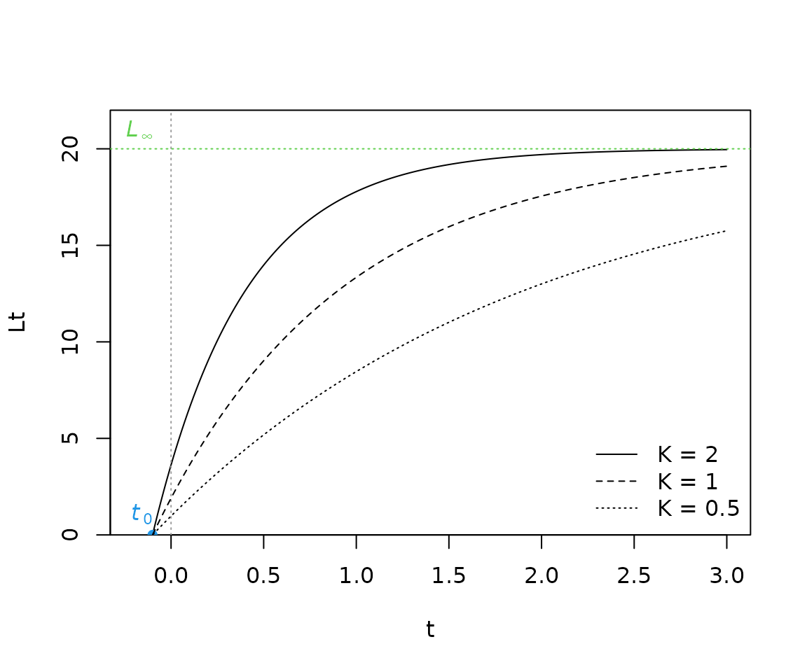
TropFishR also offers users the ability to model inter-annual variability in growth via a seasonally-oscillating VBGF (soVBGF),
where
,
is a constant indicating the amplitude of the oscillation, typically
ranging from 0 to 1 (a value
implies periods of shrinkage, which is rare), and
is the fraction of a year (relative to the age of recruitment,
)
where the sine wave oscillation begins (i.e. turns positive). In
TropFishR, these additional oscillation parameters are written as
C and ts.
The following plot demonstrates the effect of variable settings:
library(TropFishR)
t <- seq(-0.2, 3, length.out = 200)
Lt <- VBGF(param = list(Linf = 20, K = 1, t0 = -0.1, ts = 0, C=0), t = t)
Cs <- seq(0.25,1,0.25)
COLs <- 1:5
plot(t, Lt, t="l", ylim=c(0,22), yaxs="i", col=1)
for(i in seq(Cs)){
lines(t, VBGF(param = list(Linf = 20, K = 1, t0 = -0.1, ts = 0, C=Cs[i]), t = t), col=COLs[i+1])
}
legend("bottomright", legend=paste("C =", c(0,Cs)), lty=1, col=COLs, bty="n")
abline(v=0, col = 8, lty = 3)
abline(h = 20, col = 8, lty=3)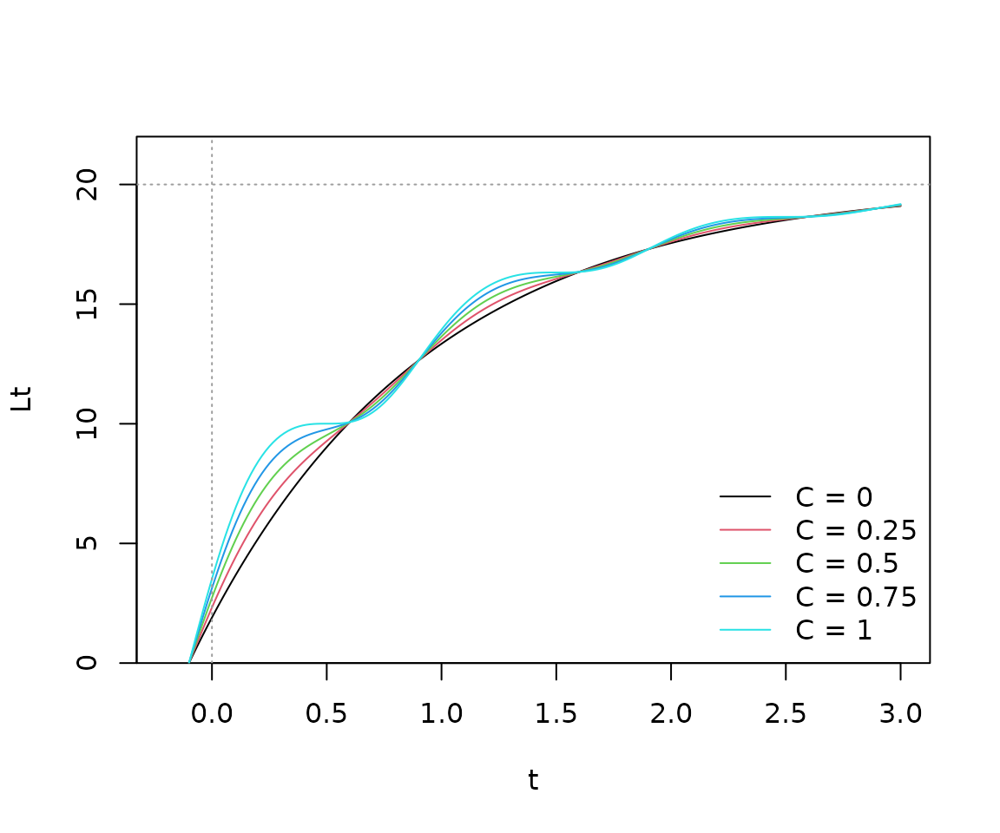
Such variation in growth is common in many organisms, but may be more pronounced in temperate areas where intra-annual environmental variability is of larger magnitude (e.g. temperature, primary production).
Length-frequency data preparation
The first step to using the ELEFAN functions is to have a
length-frequency object loaded (class lfq). For the
majority of the following examples, we will use the relatively small
alba lfq dataset (Abra alba mollusc sampled in Kiel Bay
(Brey et al. 1988)), which consists of
approximately bi-monthly sampling of length-frequencies taken over the
course of one and a half years. The alba dataset is
included within the current TropFishR version.
An lfq class dataset is essentially a list
containing the following elements: a catch frequency matrix
(lfq$catch), a vector of mid-lengths
(lfq$midLengths) corresponding to rows of the catch matrix,
and a vector of dates (lfq$dates) corresponding to the
columns of the catch matrix. The lfq class is used by
several functions within the TropFishR package
(e.g. plot.lfq). A separate tutorial exists detailing the
creation of such objects from scratch (link),
but here is a small example that passes variables from alba to a new lfq
object.
First, the three elements are added to a list:
Finally, we need to assign the class lfq to our new
object in order to allow it to be recognized by other TropFishR
functions, e.g. plot.lfq:
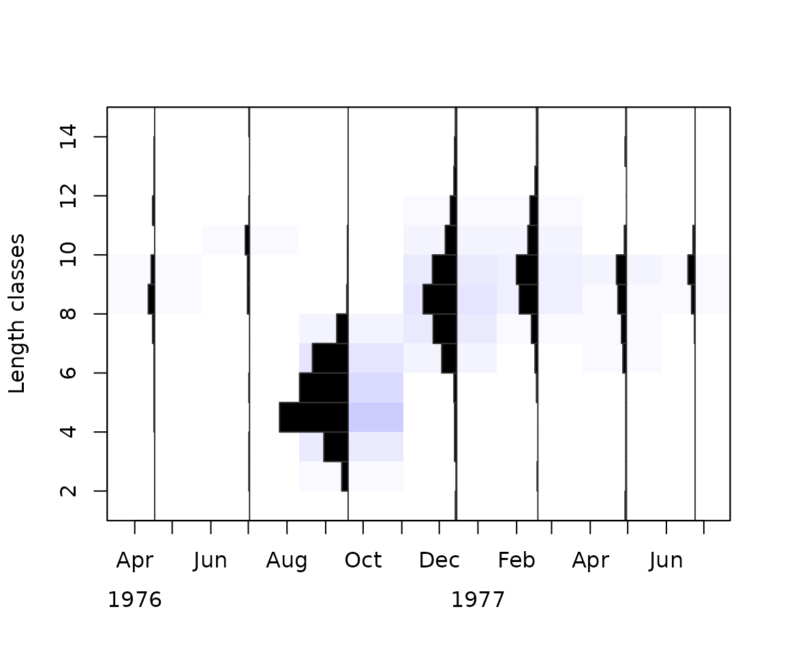
The ELEFAN approach
Data restructuring
Before proceeding with the ELEFAN functions, one should first explore
settings for the restructuring of lfq values. Restructuring calculates a
score for each lfq bin by comparing the count value against the moving
average (MA) across neighboring bins. The default setting of
MA = 5, as is used in FiSAT II, compares each bin with the
average across 5 bins (i.e. +/- 2 bins to either side). As was shown by
Taylor and Mildenberger (2017), the MA
setting used can significantly affect the scoring of growth curves
during the fitting process. As a rule-of-thumb, it is suggested that the
MA setting should approximate the number of bins spanning the smallest
(i.e. youngest) cohort width. In the alba dataset, the smallest cohort
is that which appears in the lfq data in mid-September, and its numbers
are predominantly in 6 bins (from sizes 3-7 cm), plus 2 bins on each
side with lower counts. Since the MA setting must be an odd-number,
MA = 7 seems to be an appropriate setting. It should be
noted that while FiSAT II does not allow for changing the MA setting,
one still has the option to adjust the bin width, which could be used to
aggregate counts into a smaller number of bins more in line with the
MA = 5 moving average setting. The following plot shows
reconstructed frequencies, with negative and positive values as white
and black colored histograms, respectively. Background coloring is added
to help visualize sign and magnitude of the bin values.
alba <- lfqRestructure(alba, MA = 7)
plot(alba, hist.sc = 0.75)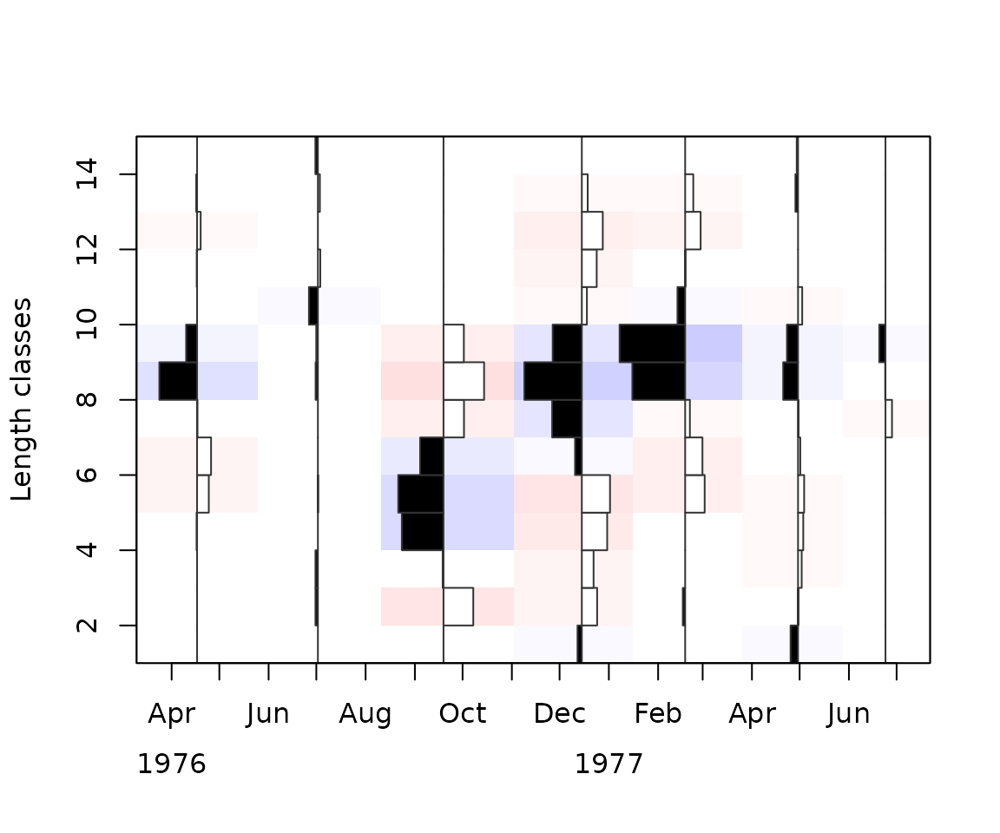
Scoring of VGBF parameter combinations
Depending on the restructuring settings, the distribution and amplitude of positive and negative scoring bins will be affected. The scoring procedure used in TropFishR follows that of FiSAT II, as outlined by Gayanilo and Pauly (1997). For a given set of VBGF parameters, yearly repeating growth curves are drawn through the lfq data. Scoring is based on the concept of “peaks”, which are runs of positive or negative scoring bins. Each peak takes the value of the largest absolute value contained within.
The sum of all positive peaks is called the “available sum of peaks” (ASP), which represents a maximum possible score (if no negative bins are crossed). The “estimated sum of peaks” (ESP) is the sum of peak values crossed by the growth curves, with the caveat that positively crossed bins are only counted once (i.e. “flagged out”) while negatively crossed bins are counted every time they are hit (Pauly 1985).
Finally, as a measure of relative fit, the ratio of the two values is used to calculate “new R” (Rn), which can have a maximum value of 1.0:
In the following plot, background shading shows runs of peaks, with positive peaks in blue, negative peaks in red, and values of zero in white.
alba <- lfqRestructure(alba, MA=7)
plot(alba, hist.col = c("white", "black"),
image.col = c(rep(rgb(1,0.8,0.8),1000), "white", rep(rgb(0.8,0.8,1),1000)),
ylim = c(0,max(alba$midLengths+0.5)))
tmp <- lfqFitCurves(alba, par = list(Linf=11, K=2.5, t_anchor=0.5),
draw = TRUE, col=4, lty=2)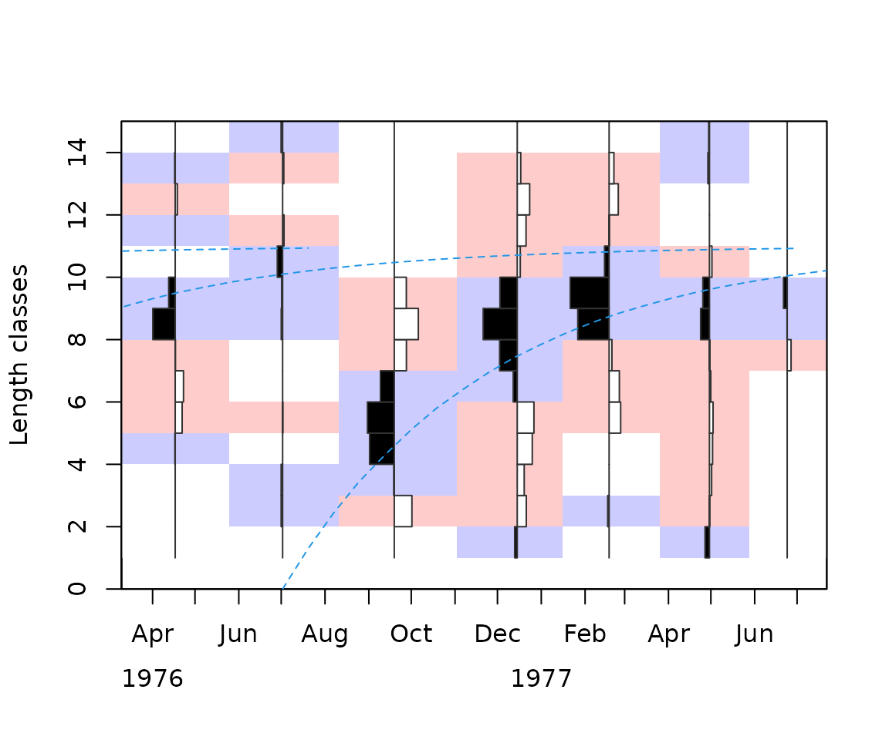
In ELEFAN, time is used rather than age, and the
point where the growth curve crosses length zero is referred to as the
“anchor time” (t_anchor). This is then interpreted as the
time when length equals zero. In the above
plot,t_anchor = 0.5, which corresponds to halfway through
the year (i.e. July 1st). Likewise, the meaning of ts is
slightly different; it is the time of the year when growth turns
positive. In some ways, the shift towards a time perspective can help
provide important biological information (i.e. identify season when
growth strongest). Furthermore, back-calculation of length zero across
bins allows for the reconstruction of a relative recruitment index (see
?recruitment).
Restricting the VBGF parameter search range
Asymptotic length (Linf)
Linf has been a historically difficult parameter to estimate with ELEFAN due to low counts at large sizes. One recommendation is to approximate Linf outside of ELEFAN, e.g. via a Powell-Wetherall plot, which may help to refine searches to a smaller range of possible values. We will see later that several maxima (high scoring regions) of the parameter search space can make the selection of a “best” combination difficult, so searches restricted to sensible values is recommended.
TropFishR includes the function powell_wetherall, which
can be used to estimate Linf, including confidence intervals. The
selection of length classes to include in the regression should be
restricted to fully-exploited sizes that contain relatively large
frequencies. In this example, both the smallest and largest sizes have
been excluded, which results in Linf = 11.74cm and a confidence interval
between 9.90 and 13.58cm.
PW <- powell_wetherall(alba, catch_columns = 1:7, reg_int = c(2,9) )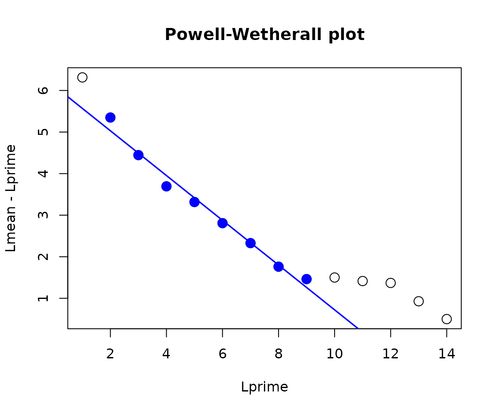
PW$Linf_est## [1] 11.3413
PW$confidenceInt_Linf## [1] 8.977609 13.704995However, the Powell-Wetherall approach has been criticized for providing unreliable results in cases where lfq data spans a small range of length classes, or in severely depleted populations where large individuals are rare. Therefore, the results should be used with caution.
Another approach may be to inform first guesstimates of Linf from other data sources, and allow ELEFAN a significant range of values for searching during VBGF fitting. Froese and Binohlan (2000) also showed strong correlation between the largest individuals (Lmax) and Linf, , but Lmax may also be difficult to obtain in highly exploited populations.
Growth constant (K)
Following limiting the range for Linf, K is likely to be restricted automatically based on the quality of the lfq data. Nevertheless, viewing possible K values for similar species, or for the same species in other studies, may allow for restrictions in the search range. Generally, small, short-lived species will have higher values in K (e.g. > 1.5), while large, longer-lived species will have lower values (< 1.0).
Response surface analysis (RSA)
As with FiSAT II, TropFishR allows one to visualize fitting scores across a range of Linf and K combinations in a so-called Response surface analysis (RSA). This provides a nice visualization of Rn scores across discrete combinations of both variables, and may also aid in narrowing possible variable ranges in subsequent, more refined searches.
In TropFishR, RSA is conducted using the ELEFAN
function. Specifically, a sequence of Linf and
K values are provided to the arguments
Linf_range and K_range. All combinations of
those parameters are used, and the best scoring t_anchor is
solved for. If a prominent cohort can be identified, one can force the
VBGF to cross through a defined bin, using the argument setting
method = "cross", which will substantially reduce the
computation time.
alba2 <- ELEFAN(
lfq = alba, MA = 7,
Linf_range = seq(7, 20, length.out = 30),
K_range = exp(seq(log(0.1),log(4), length.out = 30)),
method = "cross",
cross.date = alba$dates[3],
cross.midLength = alba$midLengths[5],
contour = TRUE, add.values = FALSE,
hide.progressbar = TRUE # change to 'TRUE' to follow algorithm's progression
)## Optimisation procedure of ELEFAN is running.
## This will take some time.
## The progress bar will inform you about the progress of the calculations.
points(alba2$par["Linf"], alba2$par["K"], pch="*", cex=2, col=2)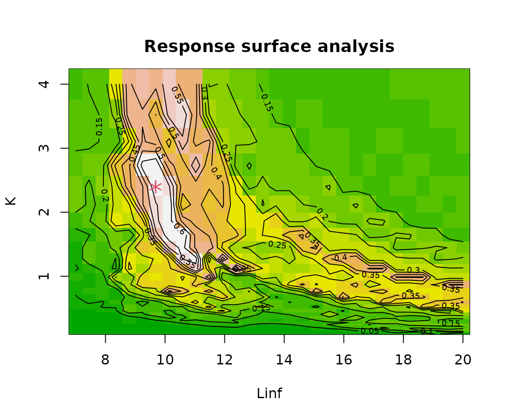
unlist(alba2$par)## Linf K t_anchor C ts phiL
## 9.689655 2.400000 0.370000 0.000000 0.000000 2.352828
alba2$Rn_max## [1] 0.649In the above plot, the highest Rn score is denoted by a red star symbol(*), although there exists a larger area of relatively similar scores. This is typical of an RSA plot, where a plateau of higher scores often forms along a banana-shaped area of negatively correlated K and Linf values, which generally follows an isocline of the growth performance index (). In the best case, a single maxima will stand out, revealing the best parameter combination, however this is usually rare. Nevertheless, a wide range of values can be visualized, allowing for reduced ranges in subsequent RSAs or refined searches via other algorithms (see following section below).
The resulting best scoring combination is added to the lfq object in
the par element, allowing for direct visualization via
plot.lfq. In the following plot, the bin designated for
crossing is denoted by a red star symbol(*):
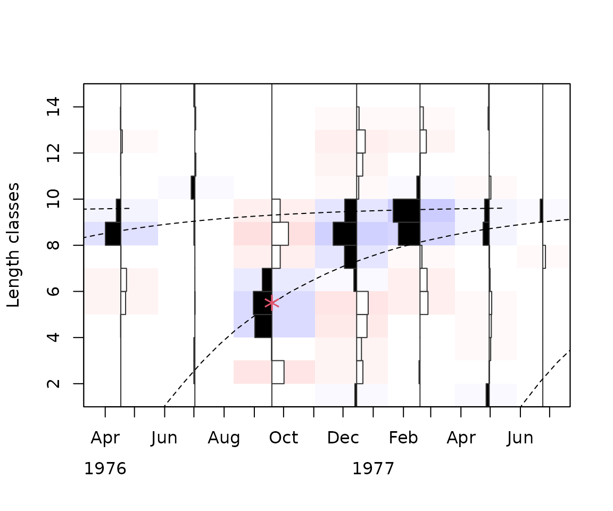
Refined searches using optimization algorithms
TropFishR contains two functions that allow for more refined searches
of VBGF parameters: ELEFAN_SA and ELEFAN_GA.
In both cases, VBGF parameters are fit on a continuous scale, allowing
for more precise estimates.
Both methods require that the user specify limits to the VBGF parameters in order to constrain the search space. The confidence intervals obtained from the P-W plot, as well as a visual inspection of higher Rn values in the RSA, helped define these ranges in the examples below.
Simulated annealing (ELEFAN_SA)
The first optimization algorithm offered in TropFishR is called
“simulated annealing” (ELEFAN_SA). The simulated annealing
algorithm begins with a highly randomized search, which gradually
focuses on regions of the parameter search space with highest Rn scores.
The degree of the initial randomized searching will depend on the
starting temperature (SA_temp), while the stopping
time can be controlled by either the maximum calculation time
(SA_time) or maximum number of iterations
(maxit). For reproducibility across computing platforms,
maxit is the more appropriate stopping point.
set.seed(1)
alba3 <- ELEFAN_SA(
lfq = alba,
seasonalised = FALSE,
init_par = alba2$par[1:5],
low_par = list(Linf=PW$confidenceInt_Linf[1], K=1, t_anchor=0, ts=0, C=0),
up_par = list(Linf=PW$confidenceInt_Linf[2], K=4, t_anchor=1, ts=1, C=1),
SA_temp = 2e5,
SA_time = 60 * 0.5, ## 60
maxit = 100, ## 400
MA = 7,
plot.score = TRUE,
verbose = FALSE
)## Simulated annealing is running.
## This will take approximately 0.5 minutes.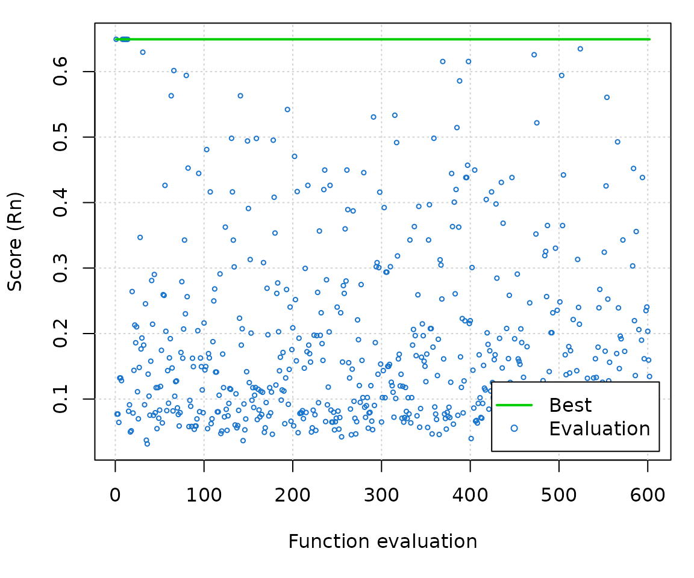
unlist(alba3$par)## Linf K t_anchor phiL
## 9.689655 2.400000 0.370000 2.352828
alba3$Rn_max## [1] 0.6493197It is advised to use an SA_temp setting that allows for
a period of random searching, before more refined local searching
begins. In the above example, the more random search behavior is
observed during the initial 100 iterations, and no improvements to Rn
were found after ca. 170 iterations.
Again, the resulting best scoring parameter combination is added to
$par, and can be directly plotted:
plot(alba3)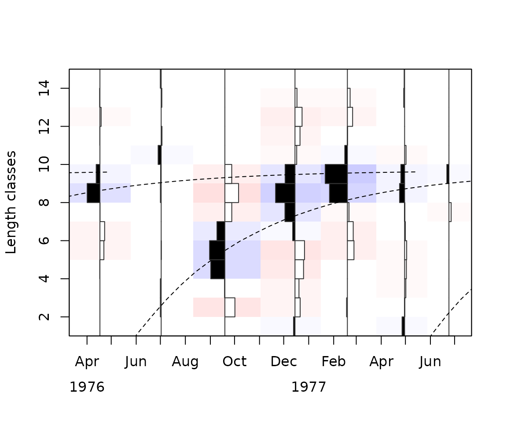
Genetic algorithm (ELEFAN_GA)
The second optimization algorithm offered in TropFishR is called
“genetic algorithm” (ELEFAN_GA). The genetic algorithm uses
the idea of natural selection to find best scoring parameter
combinations. Parameters are treated like genes carried by
individuals in the population carry. Individuals that have the
highest fitness (i.e. Rn score) reproduce and recombine their
parameter values in subsequent generations. Over time, the population
will come to be dominated by individuals that have ever increasing
fitness. As with ELEFAN_SA, the initial generations have
parameters chosen at random within the defined intervals. Over time, the
variability in the parameters gradually decreases becomes more focused
on local maxima.
Important settings include the number of individuals in the
population (popSize), the probability of mutation in the
parent gene (pmutation), the maximum number generations
(maxiter), and, as a stopping rule, the maximum number of
generations without improvement (run). The
pmutation setting is usually set low, although higher
values will increase the randomness of the search. Increasing
popSize will increase the number of starting parameter
combinations in the population, which will both increase the initial
coverage of the parameter space as well as effect the degree of
localized searching during later generations.
set.seed(1)
alba4 <- ELEFAN_GA(
lfq = alba,
seasonalised = FALSE,
low_par = list(Linf=PW$confidenceInt_Linf[1], K=1, t_anchor=0, ts=0, C=0),
up_par = list(Linf=PW$confidenceInt_Linf[2], K=4, t_anchor=1, ts=1, C=1),
popSize = 60,
pmutation = 0.2,
maxiter = 50, ## 100
run = 20,
MA = 7,
plot.score = TRUE,
monitor = FALSE,
parallel = FALSE
)## Genetic algorithm is running. This might take some time.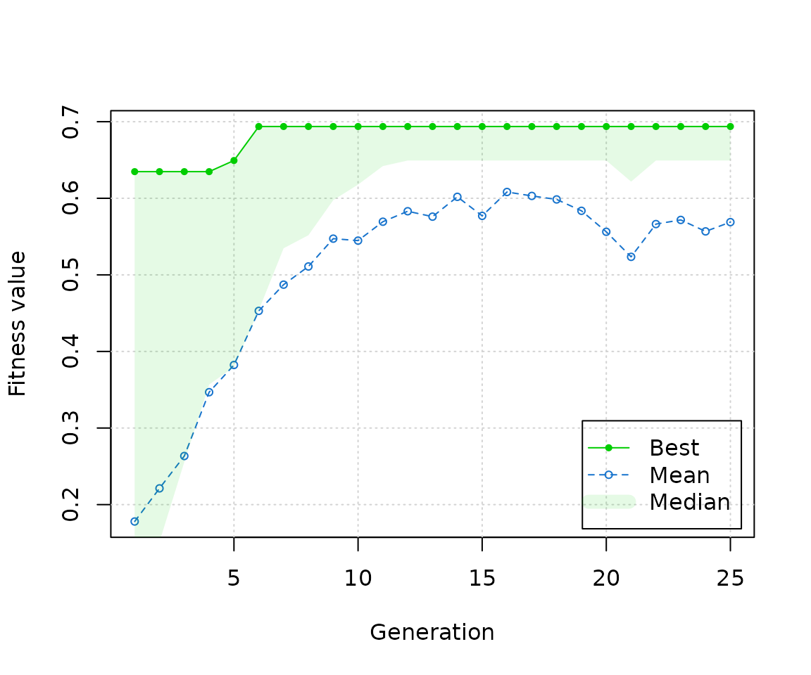
unlist(alba4$par)## Linf K t_anchor phiL
## 10.1301838 1.9618729 0.2643963 2.3039055
alba4$Rn_max## [1] 0.6937336As with ELEFAN_SA it is important to review the plot of
Rn scores by generation in order to check the algorithm’s performance.
In this example, a best solution is achieved after only 5 generations
with 60 individuals. Extending the run argument will also
affect the degree to which local maxima are searched during later
generations. One advantage of ELEFAN_GA over
ELEFAN_SA is that the search can be done with parallelized
computation (argument parallel = TRUE), which can result in
faster solutions.
Again, the best fitting combination is added to $par and
the results can be directly plotted over the lfq data:
plot(alba4)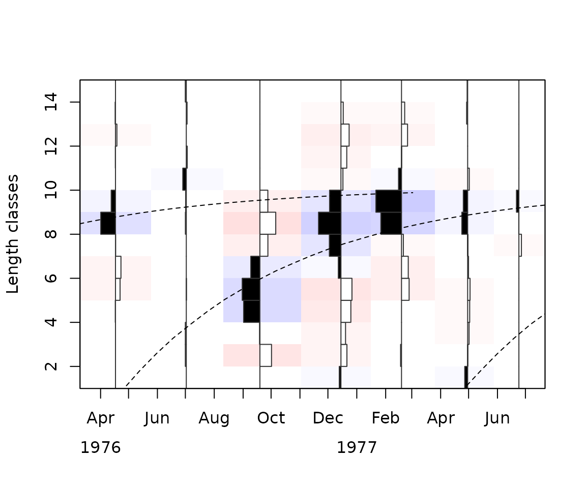
Seasonally-oscillating growth
The traditional ELEFAN functions also offer searching based on the
soVBGF, although these values must be fixed (e.g. in RSA), and thus
their estimation must be derived from other methods. Including all 5
possible parameter combinations of the soVBGF (Linf,
K, t_anchor, C, and
ts) would require an exponentially higher number of
calculations, making the approach impractical. To the contrary, both
ELEFAN_SA and ELEFAN_GA allow for easy
incorporation of these parameters in a more optimized search. Again,
algorithms search for all parameters along a continuous scale.
The following examples demonstrate fitting of soVBGF to both
alba and a synthetically-generated lfq dataset
(synLFQ4) using ELEFAN_GA. The main additions
to the functions arguments are to set seasonalized = TRUE
and to include lower and upper bounds for ts and
C in low_par and up_par,
respectively. Unless there is evidence to restrict these parameters,
bounds spanning the full range of the parameters (i.e. between 0 and 1)
are recommended.
alba
set.seed(1)
alba5 <- ELEFAN_GA(
lfq = alba,
seasonalised = TRUE,
low_par = list(Linf=PW$confidenceInt_Linf[1], K=0.1, t_anchor=0, ts=0, C=0),
up_par = list(Linf=PW$confidenceInt_Linf[2], K=4, t_anchor=1, ts=1, C=1),
popSize = 60,
pmutation = 0.2,
maxiter = 50, ## 100
run = 20,
MA = 7,
plot.score = TRUE,
monitor = FALSE,
parallel = FALSE
)## Genetic algorithm is running. This might take some time.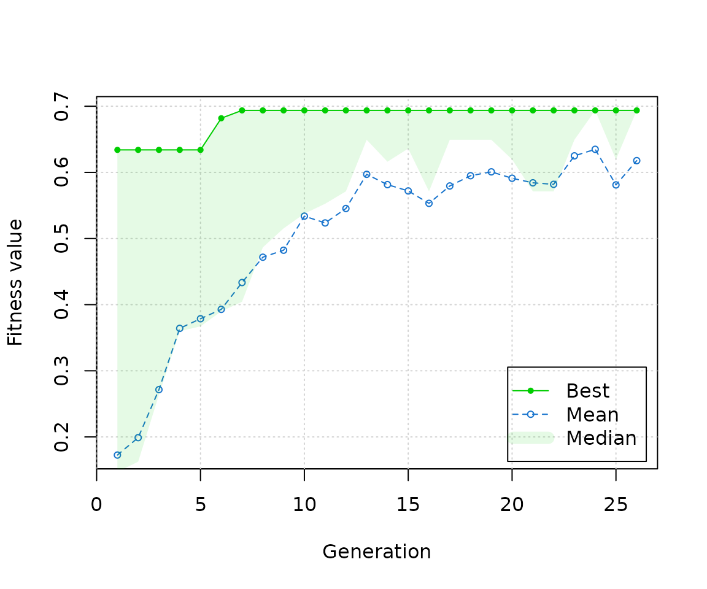
unlist(alba5$par)## Linf K t_anchor C ts phiL
## 10.2363568 1.8799341 0.2350472 0.3332832 0.7712340 2.2944335
alba5$Rn_max## [1] 0.6937336
plot(alba5)In the case of the alba dataset, no real improvement in
Rn is observed for the soVBGF fit (alba5$Rn_max) over that
of the VBGF fit (alba4$Rn_max). Although no statistical
test is (yet) available for selecting one model over the other, the lack
of sufficient improvement would seem to suggest selecting the simpler
VBGF model.
A synthetic example
For the synthetic lfq dataset synLFQ4, the soVBGF
parameters used in its generation are known:
true_par <- list(Linf = 80, K = 0.5, t_anchor = 0.25,C = 0.75, ts = 0.5, phiL = 3.51)The dataset is significantly more detailed (72 length bins, 25 time
samples) than alba (14 length bins, 7 time samples), and
thus will take longer to solve. For such large lfq data sets, solution
time may be reduced through use of parallel computing
(i.e. parallel = TRUE). From the previous work presented by
Taylor and Mildenberger (2017), we know
that a moving average setting of MA = 11 is appropriate for
this lfq data.
set.seed(1)
data("synLFQ4")
synLFQ4 <- ELEFAN_GA(
lfq = synLFQ4,
seasonalised = TRUE,
low_par = list(Linf=70, K=0.1, t_anchor=0, ts=0, C=0),
up_par = list(Linf=110, K=1, t_anchor=1, ts=1, C=1),
popSize = 60,
pmutation = 0.2,
maxiter = 50, ## 100
run = 20,
MA = 11,
plot.score = TRUE,
monitor = FALSE,
parallel = FALSE
)## Genetic algorithm is running. This might take some time.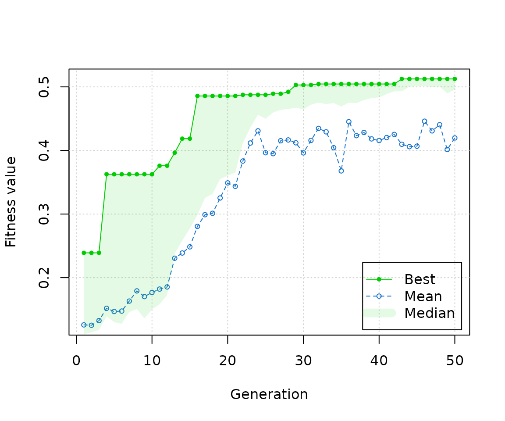
In this case, the true values are very well estimated:
tmp <- as.data.frame(rbind(unlist(true_par), unlist(synLFQ4$par)))
rownames(tmp) <- c("true", "estimated")
tmp$Rn <- c(synLFQ4$Rn_max, lfqFitCurves(synLFQ4, par = true_par)$Rn_max)
tmp <- round(tmp,3)
tmp## Linf K t_anchor C ts phiL Rn
## true 80.000 0.50 0.250 0.750 0.500 3.510 0.513
## estimated 86.533 0.41 0.075 0.686 0.503 3.487 0.453
plot(synLFQ4, draw = FALSE)
tmp <- lfqFitCurves(synLFQ4, par = true_par, col=8, lty=1, draw = TRUE)
tmp <- lfqFitCurves(synLFQ4, par = synLFQ4$par, col=4, lty=2, draw = TRUE)
legend("top", ncol=2, legend = c("true", "estimated"), col=c(8,4), lty=c(1,2))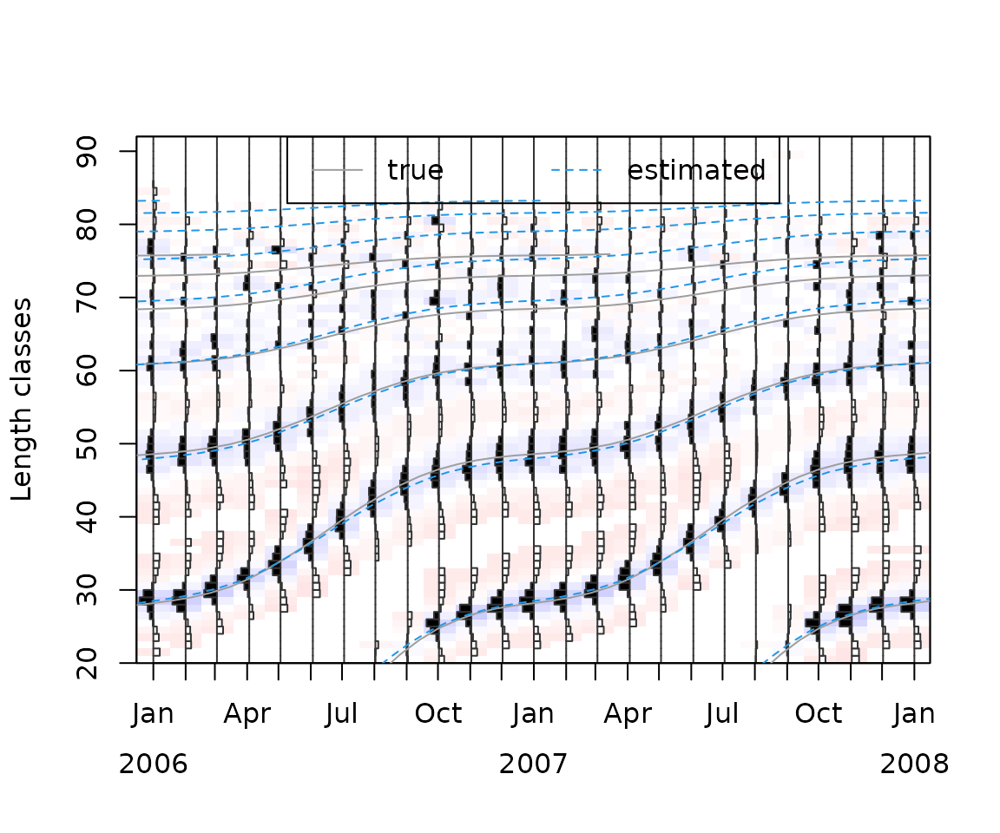
Variable mutation probability
In most cases, using constant mutation probability setting
(pmutation) is sufficient to achieve a good fit with
ELEFAN_GA. Nevertheless, it may be desired to use a
variable setting to adjust the periods of random versus focused
searching. The GA package has a built in function
(ga_pmutation) that allows for a decreasing pmutation rate
over the iteration time (see ?GA::pmutation for further
information).
The following example uses ELEFAN_GA with a variable
mutation rate, which starts at 0.5 and decreases to 0.1. This gradual
focusing of pmutation rates in a way mimics the decreasing temperature
of simulated annealing.
synLFQ4 <- ELEFAN_GA(
lfq = synLFQ4,
seasonalised = TRUE,
low_par = list(Linf=70, K=0.1, t_anchor=0, ts=0, C=0),
up_par = list(Linf=110, K=1, t_anchor=1, ts=1, C=1),
popSize = 60,
pmutation = function(...) GA::ga_pmutation(..., p0=0.5, p=0.1),
maxiter = 50, ## 100
run = 20,
MA = 11,
plot.score = TRUE,
monitor = FALSE,
parallel = FALSE
)## Genetic algorithm is running. This might take some time.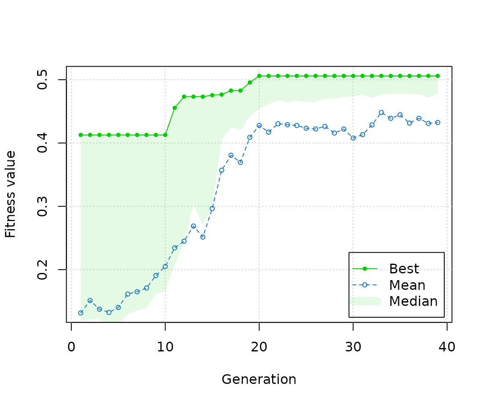
Best practices
The following list highlights some existing best practices for using the ELEFAN approach:
-
lfqdata- should contain relatively high counts that are representative of the length distribution of the population (in the best case) or catches.
- should be sampled at regular intervals throughout the year, and at roughly the same sampling effort.
- should cover a substantial degree of small length classes, as their relatively higher numbers and more apparent growth will aid in the fitting of the VBGF. A general rule-of-thumb could be that the smallest bins should start at at least 25% of Linf.
-
MAsetting- should approximate the number of bins spanning the width of a cohort following recruitment.
- Optimization settings
- should allow for sufficient coverage of the full parameter search
space during the initial, more randomized part of search
(i.e.
SA_tempargument inELEFAN_SA;popSizeandpmutationarguments inELEFAN_GA). - should allow for sufficient search time during later iterations /
generations so that parameter space containing local maxima are fully
explored (i.e.
SA_timeandmaxitarguments inELEFAN_SA;maxiter,elitism, andrunarguments inELEFAN_GA).
- should allow for sufficient coverage of the full parameter search
space during the initial, more randomized part of search
(i.e.